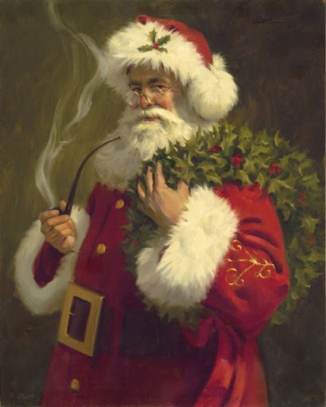
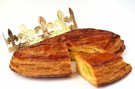
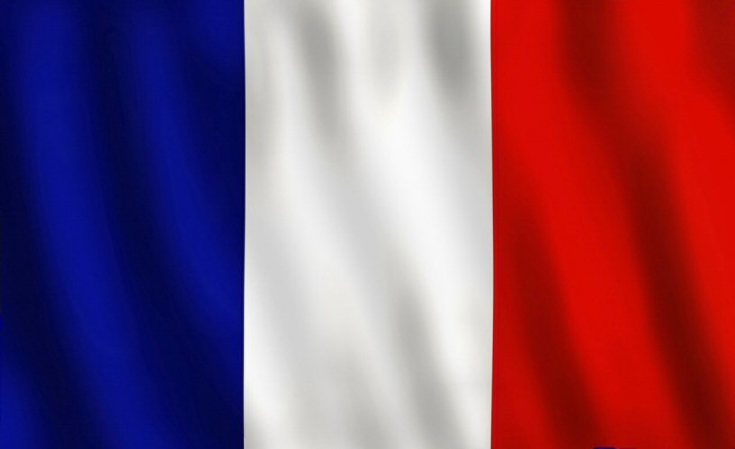

< Повернутися до вибору країни

Франція
Французький Дід Мороз - Пер Ноель - приходить в новорічну ніч та залишає подрунки в дитячих черевиках
Той, хто отримав боб, запечений в новрічний пиріг отримує титул "бобового короля" і в святкову ніч всі підкоряються його наказам. 
Біля ялинки ставлять маенькі дерев'яні або глиняні фігурки, які називаються сантони
